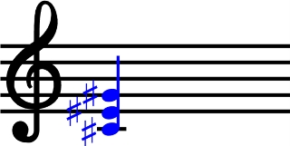

Polyphonic C#
Polyphonic C# extends the C# programming language with new asynchronous concurrency abstractions, based on the join calculus. The language presents a simple and powerful model of concurrency which is applicable both to multithreaded applications running on a single machine and to the orchestration of asynchronous, event-based applications communicating over a wide area network.
Polyphonic C# was designed and implemented by Nick Benton, Luca Cardelli, and Cédric Fournet at Microsoft Research, Cambridge. The Polyphonic C# constructs were subsequently integrated into the Cω language.
Resources:
- The online Introduction to Polyphonic C#.
- Papers:
- Nick Benton, Luca Cardelli and Cédric Fournet. Modern Concurrency Abstractions for C#. ACM Transactions on Programming Languages and Systems (TOPLAS) 26(5) pp.269-804. September 2004. pdf
- Nick Benton, Luca Cardelli and Cédric Fournet. Modern Concurrency Abstractions for C#. In B. Magnusson (Ed.), Proceedings of the 16th European Conference on Object-Oriented Programming (ECOOP 2002). June 10-14, 2002 University of Málaga, Spain. LNCS 2374, Springer-Verlag. pdf
- Nick Benton. Jingle Bells: Solving the Santa Claus Problem in Polyphonic C#. 2003. pdf
- Some PowerPoint slides accompanying the above paper.
- A PowerPoint poster for your office or bedroom.